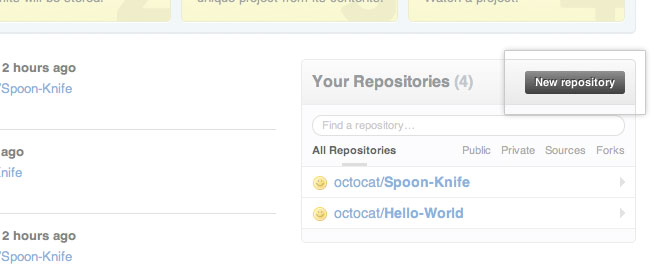
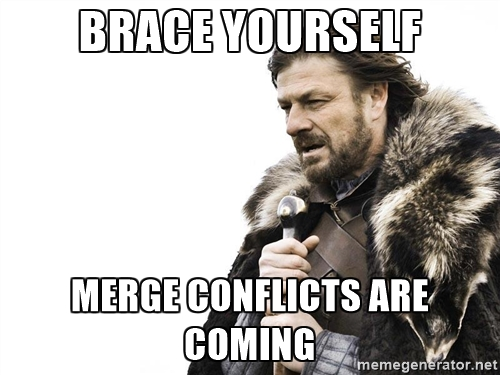

Version Control &
Github
What we will cover today
- What is version control and why should we care?
- Basics of git: the essential commands
- "Gitting" social with GitHub
Version Control
What is Version Control?
Allows you (and your team) to do 2 powerful things
Collaborate
Create anything with other people, from academic papers to entire websites and apps.
Track and Revert Changes
See the changes that have been made
Go "back in time" to a past version
Working without Version Control
No, really this time.
Working without Version Control
Version Control History
Popular VCS
1990s -- CVS (Concurrent Version Systems)
2000s -- SVN (Apache Subversion)
2005 -- Git (well, Git)
Version Control Types
Centralized Version Control
Examples: CVS, SVN
One central server, each client (person) checks out and merges changes to main server
Distributed Version Control
Examples: Git, Mercurial
Each client (person) has a local repository, which they can then reconcile with the main server.
Centralized Vs Distributed
Version Control Distribution
Intro to Git
Why Use Git?
- Fast! Access information quickly and efficiently.
- Distributed! Everyone has her own local copy.
- Mind-bogglingly scalable! Enables potentially thousands (millions!) of developers to work on single project.
- Local! You don't need a network connection to use it. You only need a remote server if you want to share your code with others (e.g., using GitHub).
- Branches! Keep your coding experiments separate from code that is already working.
- Everyone has a local copy of the shared files and the history.
Git has its own peculiar vocabulary
Here are some of the most basic ones.
- A repository is where you keep all the files you want to track.
- A branch is the name for a separate line of development, with its own history.
- A commit is an object that holds information about a particular change.
- HEAD refers to the most recent commit on the current branch.
Workflow
- Branch
- Add, edit, delete, commit
- Open a pull request
- Review & discuss
- Deploy
- Merge
Workflow

Repository
Repo
A repository is usually used to organize a single project. Repositories can contain folders and files, images, videos, spreadsheets, and data sets – anything your project needs. We recommend including a README, or a file with information about your project.
Create your first repository
Create your first repository

Create your first repository
ReadME
While a README isn't a required part of a GitHub repository, it is a very good idea to have one. READMEs are a great place to describe your project or add some documentation such as how to install or use your project. You might want to include contact information - if your project becomes popular people will want to help you out.
Add, edit, delete, commit
Whenever you add, edit, or delete a file, you're making a commit, and adding them to your branch.
Each commit has an associated commit message, helpful for others to understand your code.
Each commit is a separate unit of change, letting you roll back changes.
Add, edit, delete, commit
View history

Initialize repository with Git
git init
git status
Add files
Create a new hello_world.txt file in your new folder
Check repo status
git status
Tell Git to track our new file
git add hello_world.txt
git status
File is now tracked by Git
Changes and commits
Open hello_world.txt and add some more text
git status
Stage and commit the change
git add hello_world.txt
git commit -m "First commit. Added hello world to repository."
Exercise: Manage Your Code With Git
Branching
Branching
- Develop different code on the same base
- Conduct exploratory work without affecting the work on master branch (e.g. to try out new ideas)
- Incorporate changes to your master branch only when you are ready
Branching
Create a new branch
Branching
Create a new branch called trucs-slides
git checkout -b trucs-slides
Add new lines to hello_world.txt
git add hello_world.txt
git commit -m "Adding changes to trucs-slides
Branching
Switching branches
Branching
Switching branches
See all branches. Branch with * is active
git branch
Switch to master and look at hello_world.txt
git checkout master
Switch to version2 and look at hello_world.txt
git checkout version2
Deploy
Commits
Knowledge Test: When you commit, will the chnages you make show up online?
Commits are local, so they don't appear in your host environment until you push
Deploy
Deploy your changes to verify them in production.
If your branch causes issues, you can roll it back by deploying the existing master into production.
Forking
Forking
- There are MILLIONS of public repositories on GitHub
- If you want to use or contribute to a repository, you can fork it.
Forking

Forking
Clone - to get a local repository of your fork
cd ../
git clone https://github.com/username/FORKED-REPO-NAME.git
cd FORKED-REPO-NAME
git remote add upstream https://github.com/original-username/FORKED-REPO-NAME.git
# Assigns the original repository to a remote called "upstream"
git fetch upstream
# Pulls in changes not present in your local repository, without modifying your files
Pull Requests & Merging
Pull Requests (PRs)
Pull Requests initiate discussion about your commits.
You can open a Pull Request at any point during the development process.
Pull Requests
- After you
forkandclonea repository all pushed changes will go to your fork - These changes will not affect the original repository
- If you would like to get your changes to be incorporated into the original repo, you can submit a pull request
Start Pull Request
Managing Pull Requests
If you are the owner of repo, you will review and decide whether to merge in the pull requests you receive.
Learn more at Github Collaboration TutorialsReview & discuss
Pull Requests are designed to encourage and capture discussion to make your code great.
If someone comments that there is a bug, you can fix it in your branch and push up the change.
GitHub will show your new commits and any additional feedback.
Merge
Merge your code with the master branch!
Once merged, Pull Requests preserve a record of the historical changes to your code.
What could possibly go wrong?
What is a merge conflict?

Exercise: Contribute To A Repo
Let's your site on the web!
Github Pages
- Public webpages hosted and published through Github
- Designed to host your personal, organization, or project pages directly from a GitHub repository